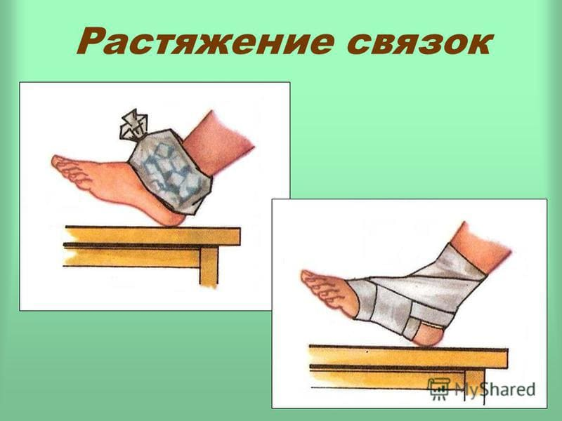
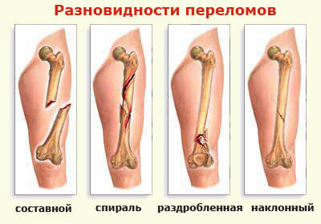
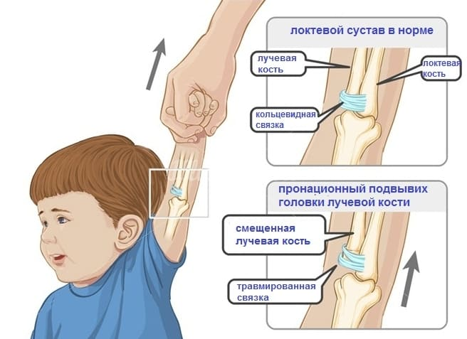

Все эти меры останавливают кровотечение внутри сустава или мышцы и ускоряют заживление. Приложите к опухшему участку или месту перелома пакет льда как минимум на 20 минут. Плотно (но не стягивая) прибинтуйте лед эластичным бинтом к поврежденному суставу или месту возможного перелома. Приподнимите конечность примерно на 15 см, положив ее на подушку, или иммобилизуйте конечность, подвесив ее на перевязь, и не позволяйте делать ненужные движения или переносить на пострадавшую конечность вес тела. Если вы подозреваете перелом кости, иммобилизуйте конечность и доставьте ребенка в приемный покой.

При частых падениях у начинающего ходить ребенка случаются небольшие переломы (надломы) стержня трубчатых костей ног. Подумайте о детском переломе, если ваш ребенок хромает и отказывается удерживать вес на одной ноге. Дети в возрасте от года до двух часто прихрамывают в течение нескольких часов после падения или даже из-за царапины на ступне или ушибленного пальца ноги. Если хромота наблюдается у ребенка этого возраста более 24 часов, она заслуживает внимания врача, который установит, нет ли перелома или повреждения тазобедренного сустава.

Во время игры или когда родитель, как обычно, тянет вырывающегося ребенка за руку, одна из костей верхней конечности может выскочить из локтевого сустава. Ваш врач или работники скорой помощи могут вправить кость обратно, и ребенку не будет причинено никакого вреда.

Марта, Уильям, Роберт, Джеймс Сирс"Ваш малыш от рождения до двух лет"